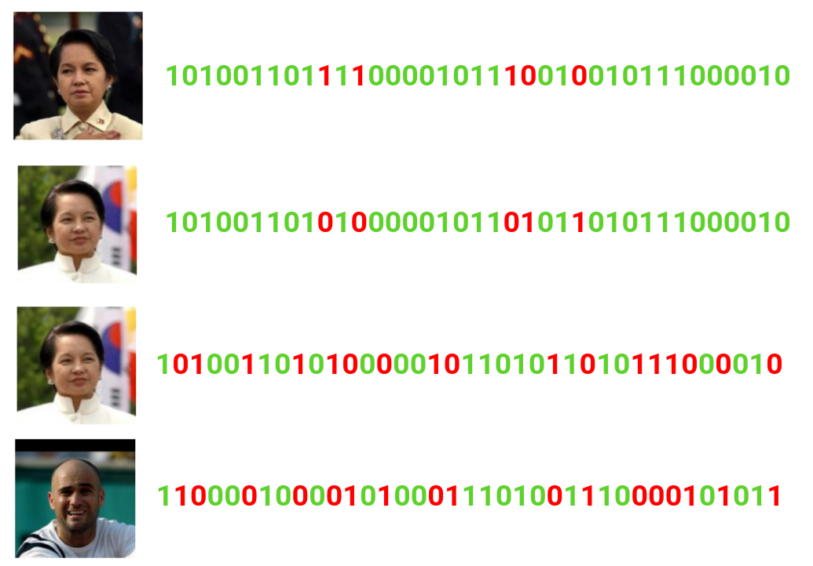

Identifiable Yet Recognizable: Image Distortion with Preserved Embeddings
Submitted to Engineering Applications of AI

Deep learning-based biometric cryptographic key generation with post-quantum security
Published in Multimedia Tools and Applications (Springer)

Cross-Database Liveness Detection: Insights from Comparative Biometric Analysis
Published in CEUR Proceedings